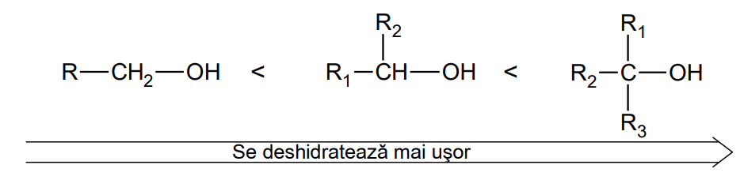

Definiție: Compușii hidroxilici sunt substanțe organice care conțin cel puțin o grupă „–OH” în moleculă. (Formula generală: R – OH). Compușii hidroxilici, în funcție de natura radicalului hidrocarbonat, se clasifică în alcooli și fenoli.
Alcooli
Definiție: Alcoolii sunt compușii organici care conțin în moleculă grupa funcțională „–OH” legată de un atom de carbon saturat.
Formula generală a alcoolilor : R – OH.
Formula generală a alcoolilor monohidroxilici aciclici saturați: C2H2n+2O.
Nu există alcooli stabili cu două sau trei grupe –OH legate de același atom de carbon.
Nu există alcooli stabili cu grupa – OH legată de un atom de carbon hibridizat sp (cu legătură triplă) sau sp2 (cu legătură dublă).
Nomenclatura : se numerotează catena de atomi de carbon, se precizează poziția grupei / grupelor –OH, numele hidrocarburii și (când grupa –OH este prioritară) sufixul „ol” pentru alcoolii monohidroxilici, „diol” pentru cei dihidroxilici, „triol” pentru cei trihidroxilici, etc.
alcooli monohidroxilici (alcooli cu o singură grupă „– OH” )
alcooli polihidroxilici (alcooli cu două sau mai multe grupe „– OH” ):
Proprietăți fizice
Alcoolii au puncte de fierbere și de topire mai ridicate decât ale altor compuși organici cu același număr de atomi de carbon, datorită legăturilor de hidrogen care apar între moleculele lor atât în stare lichidă cât și în stare solidă. Punctele de fierbere cresc cu numărul de grupe – OH.
Legături de hidrogen intermoleculare între moleculele de alcool
Alcoolii inferiori sunt miscibili cu apa (se amestecă în orice proporție). În soluție cu apa, alcoolii formează legături de hidrogen și cu moleculele de apă.
Legături de hidrogen intermoleculare între moleculele de alcool îi moleculele de apă
Solubilitatea alcoolilor în apă crește cu numărul de grupe – OH din moleculă și scade cu creșterea catenei
La temperatură normală, alcoolii inferiori sunt lichizi (incolori), iar cei superiori sunt solizi
Densitatea alcoolilor este mai mică decât densitatea apei, dar mai mare decât densitatea hidrocarburilor corespunzătoare.
Metanolul este o substanța toxică - doza letală la om: 0,15 g/kg corp.
metanol
metan
etanol
etan
glicerină
propan
punct de fierbere
(0o C)
+ 65
-162
+ 78
- 89
290
- 42
punct de topire (0o C)
-98
-183
-114
-172
18
-188
densitatea (g/cm3 )
0,791
0,424
0,789
0,546
1,26
0,582
Proprietăți chimice
Proprietățile chimice ale alcoolilor se datorează grupei funcționale hidroxil – OH din moleculele lor.
Caracterul slab acid al alcoolilor
Alcoolii au caracter slab acid, datorită polarității legăturii oxigen-hidrogen. În reacție cu metalele active (Li, Na, K) se formează alcoxizi (alcoolați):
De exemplu, în reacția etanolului (anhidru) cu sodiul, se formează ioni etoxid, cationi de Na+ și hidrogen, care se degajă.
Reacția metalelor alcaline cu alcoolii este mai puțin violentă decât cu apa.
Alcoxizii alcalini sunt substanțe ionice, cu caracter bazic (baze tari), instabili în prezența apei, cu care reformează alcoolul din care s-au obținut.
Reacții de oxidare ale alcoolilor
Alcoolii pot da reacții de:
oxidare parțială, numite și reacții de oxidare, sub acțiunea agenților oxidanți. Alcoolii se transformă în compuși organici în care atomul de carbon de care este legată gruparea funcțională (hidroxil) se transformă într-un compus în care atomul de carbon are un număr de oxidare mai mare (compuși carbonilici, acizi carboxilici);
oxidare totală sau ardere, prin care alcoolii se transformă în H2O și CO2.
reacția de oxidare cu K2Cr2O7 și H2SO7 sau reacția de oxidare blândă.
Această reacție poate fi folosită pentru recunoașterea alcoolilor primari sau secundari (se schimbă culoarea soluției din portocaliu în verde).
Alcoolii terțiari sunt stabili la acțiunea bicromatului de potasiu în prezența acidului sulfuric.
reacția de oxidare cu KMnO4 și H2SO7 sau reacția de oxidare energică.
Prin reacția de oxidare energică (distructivă) alcoolii primari formează un acid carboxilic, iar alcoolii secundari și cei terțiari amestecuri de acizi carboxilici.
Dacă se formează acid formic (HCOOH) în reacția de oxidare energică, acesta se transformă în CO2 și H2O în prezența KMnO4.
Prin oxidarea energică a alcoolilor terțiari, se obține un amestec de acizi carboxilici.
reacția de oxidare fermentativă cu oxigen din aer.
Soluțiile diluate (maxim 18%) de etanol (de ex. vinul), în contact cu aerul se oxidează datorită enzimelor produse de unele bacterii prezente în aer (Micoderma aceti), care catalizează oxidarea etanolului la acid acetic.
reacția de ardere.
Prin arderea alcoolilor se obține dioxid de carbon, apă și căldură.
Metanolul se poate utiliza drept combustibil pentru motoare, deoarece are putere calorică mare. În plus se poate obține pe cale industrială și formează produși de reacție care nu poluează. Nu se foloseșe însă decât în cazuri speciale deoarece este toxic pentru organismele vii.
Reacția de esterificare
Reacția de esterificare este reacția dintre un acid și un alcool, în urma căreia se obțin un ester și o moleculă de apă. Este o reacție de condensare.
Alcoolii pot da reacții de esterificare atât cu acizi organici cât și cu acizi anorganici, în prezența unui catalizator, un acid tare (HCl, H2SO4). Reacția de esterificare dintre un acid carboxilic și un alcool, este o reacție de echilibru.
Esterii organici inferiori au miros plăcut de fructe și flori. Ei se extrag fie din produsele naturale respective, fie pe cale artificială și se utilizează pentru prepararea uleiurilor volatile, în parfumerie, cosmetică și cofetărie.
Esterii organici se pot obține dintr-un alcool și un acid carboxilic, o clorură acidă sau o anhidridă.
Reacții de esterificare ale glicerinei
esterificarea glicerinei cu acidul azotic
Prin reacția de esterificare dintre glicerină și acid azotic, se obține trinitratul de glicerină (TNG).
Trinitratul de glicerină este o substanță instabilă. El se descompune ușor cu explozie prin autooxidare, prin șoc mecanic sau prin încălzire:
esterificarea glicerinei cu acizii grași
Prin esterificarea glicerinei cu acizii grași (identici sau diferiți) se obțin trigliceridele (gliceridele) componentele principale ale grăsimilor.
În grăsimi, alături de alte substanțe organice, apar în proporție ridicată amestecuri de esteri simpli sau micști ai glicerinei cu acizi grași saturați sau nesaturați.
Clasificarea gliceridelor
după starea de agregare pot fi: lichide, semisolide sau solide. Cele lichide se extrag de obicei din surse vegetale (uleiuri vegetale) sau mai rar animale (uleiul de pește). Cele solide se extrag prin topirea țesutului animal sau prin centrifugare (untul) și mai rar din plante (untul de cocos).
după natura resturilor de acizi grași pe care îi conțin în moleculă, pot fi: gliceride simple – glicerina este esterificată cu un singur acid și gliceride mixte – glicerina este esterificată cu doi sau trei acizi diferiți.
după tipul acizilor grași, grăsimile pot fi: saturate, nesaturate sau mixte, dacă conțin în moleculă resturi de acizi grași saturați, nesaturați sau de ambele feluri.
Determinarea gradului de nesaturare al unei grăsimi se face prin adiția de brom sau iod la grăsime. Prin cifra de iod sau cifra de brom se determină gradul de nesaturare al grăsimii (grame de halogen/100 g grăsime).
Grăsimile solide (saturate) se pot obține prin hidrogenarea grăsimilor lichide (nesaturate). Margarina se obține prin hidrogenarea uleiurilor vegetale în prezență de catalizator – Ni. Procesul poate fi controlat pentru a obține o anumită consistență a produsului. Din margarină se elimină unele substanțe nedorite (de ex. cu miros neplăcut, coloranți, etc.) și se adugă altele pentru îmbunătățirea calității (de ex. vitamine, coloranți, etc).
Reacții de eliminare
Alcoolii participă la reacții de eliminare cu ajutorul grupei funcționale hidroxil – OH. Ei pot da reacții de eliminare a unei molecule de apă din interiorul aceleiași molecule de alcool (eliminare intramoleculară) sau dintre două molecule de alcool (eliminare intermoleculară).
Reacția de deshidratare
Reacția de deshidratare a alcoolilor are loc la cald în prezență de catalizatori, dintre care cei mai folosiți sunt: acidul sulfuric și acidul fosforic.
Prin deshidratarea alcoolilor monohidroxilici la cald, în prezență de acid sulfuric se obțin alchene.
În reacțiile de deshidratare ale alcoolilor se respectă regula lui Zaițev:
Regula lui Zaițev:Hidrogenul pleacă de la un atom de carbon vecin atomului de carbon de care se leagă gruparea hidroxil, mai sărac în hidrogen.
Reacția de deshidratare a alchenelor are loc cu atât mai ușor cu cât grupa hidroxil (– OH), este legată de un atom de carbon mai substituit:

Prin deshidratarea alcoolilor se mai pot obține și alți compuși organici.
Glicerina formează o aldehidă nesaturată prin deshidratare:
2,3-dimetil-2,3-butandiolul (pinacolul) formează sub acțiunea acizilor o cetonă (pinacolona).
Reacția de eterificare
Reacția de deshidratare a alcoolilor poate decurge și între două molecule de alcool (intermolecular) când se formează eteri. Eterii au formula generală: R1 – O – R2 , în care R1 și R2 pot fi identici sau diferiți.
Reacția de eterificare decurge în prezența unor substanțe capabile să absoarbă apa rezultată (de ex. H2SO4 conc. sau H3PO4 conc.) la temperatură (mai mică decât în cazul reacției de deshidratare intramoleculară).
Reacția de deshidratare intermoleculară se folosește pentru alcoolii primari. Pentru obținerea eterilor nesimetrici (cu radicali diferiți), se folosește reacția dintre un alcoxid și un derivat halogenat (metoda Williamson).
Reacția cu acizii halogenați
Prin încălzirea alcoolilor cu acizi halogenați, se obțin derivați halogenați.
Reactivitatea hidracizilor scade în ordinea HI > HBr > HCl. În cazul acidului clorhidric este necesară adăugarea de ZnCl2. Alcoolii terțiari reacționează cel mai ușor, iar alcoolii primari reacționează cel mai greu, necesitând încălzire.
Reacția de alchilare
Alchilarea arenelor cu alcooli
Reacția de alchilare Friedel-Crafts a arenelor se poate face și cu alcooli, în prezență de acid sulfuric drept catalizator.
Alchilarea alcoolilor cu oxid de etenă
Oxidul de etenăare reactivitate mare și poate reacționa cu substanțe care conțin un atom de hidrogen activ, substanțe cu caracter bazic (amoniac, amine) cât și substanțe cu caracter acid (alcooli, fenoli, acizi carboxilici). Reacțiile cu oxid de etenă, se numesc reacții de etoxilare, deoarece prin aceste reacții se introduce grupa etoxi (– CH2 – CH2 – O –) în molecula unui compus organic.
Prin etoxilarea alcoolilor se obțin hidroxieteri, compuși organici care conțin cele două grupe funcționale hidroxil (– OH ) și eter (– O –).